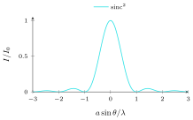

the Airy pattern with first zero at
the Airy pattern with first zero at  ; a grating of period
; a grating of period  to with resolving power
to with resolving power  .
.Statement and derivation
Huygens–Fresnel: each point of the aperture emits a spherical wavelet. Far away () the path difference is linear in the aperture coordinate, so
a Fourier transform with spatial frequency . Slit: , , zeros at . Same mathematics as position–momentum duality and time–frequency.Resolution
Rayleigh criterion: two points are resolved when the maximum of one falls on the first zero of the other: . Microscopy: .
Gratings
 slits of period
slits of period  : , . Principal maxima obey the grating equation; peak width ; resolving power . Blazing tilts facets to concentrate power in one order.
: , . Principal maxima obey the grating equation; peak width ; resolving power . Blazing tilts facets to concentrate power in one order.
Worked example
1200 lines/mm grating ( nm), normal incidence, nm: , ; impossible (). Illuminating 10 mm () resolves nm in first order. A 10 cm lens at 550 nm resolves µrad (1.22λ/D).
Picture: single-slit pattern

Zeros at ; the central lobe (between the first zeros) is twice as wide as the others and holds ≈ 90% of the power.
Engineering applications
Spectrometers and wavelength demultiplexers (arrayed-waveguide gratings), grating couplers on photonic chips, lithography resolution limits, laser beam shaping with diffractive optics, CD/DVD pits, beam steering in LiDAR (optical phased arrays).
Exam-style exercise
A transmission grating has 600 lines/mm. (a) First- and second-order angles of the sodium lines 589.0 and 589.6 nm at normal incidence. (b) Minimum number of illuminated lines to resolve them in first and second order. (c) First-order angles at 30° incidence. (d) A 50 µm slit at 633 nm: width of the central lobe on a screen 1 m away.
Solution
(a) µm: and ; and — the separation doubles in second order. (b) : ( ), (). (c) : : , ; : . (d) First zeros at : central lobe m mm.
), (). (c) : : , ; : . (d) First zeros at : central lobe m mm.
Pitfall
The Fraunhofer approximation needs (or a lens focal plane); close to the aperture (Fresnel regime) the pattern is not a Fourier transform.